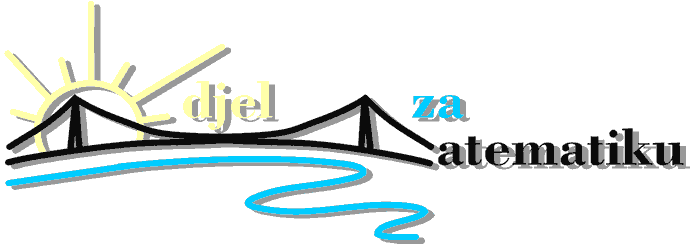

Sveučilište Josipa Jurja Strossmayera u Osijeku
 Odjel za matematiku
Trg Ljudevita Gaja 6
31000 Osijek
broj telefona: 031/224 800
fax: 031/224 801
Danas je (pričekaj dok JavaScript učita):
Naslovna stranica
Životopis
Seminarski radovi
Područje interesa
Teologija tijela
Linkovi
Domaće zadaće

| Studij | Godina studija | Naziv kolegija | Seminarski rad | Datoteka |
|---|---|---|---|---|
| Sveučilišni nastavnički studij matematike i informatike | 3. godina | Uredsko poslovanje | Prijenosna (notebook) računala u uredskom poslovanju | .doc .ppt |
| Računalne mreže i usluge | P2P aplikacije, socket programiranje s TCP i UDP, i primjerima u Pythonu | .doc .ppt | ||
| 4. godina | Psihologija odgoja i obrazovanja | Pojam o sebi u ranom djetinjstvu | .ppt | |
| Opća pedagogija | Diferencijalna pedagogija | .doc .ppt |
- Prijenosna (notebook) računala u uredskom poslovanju
- - seminar o tipovima i vrsti prijenosnih računala, njihovim komponentama, te primjeni u uredskom poslovanju.
- - seminar sam radila s kolegom Marinom Marvinom
- P2P aplikacije, socket programiranje s TCP i UDP, i primjerima u Pythonu
- - seminar o P2P aplikacijama, te o socket programiranju (TCP i UDP)
- - primjeri su obrađeni u programskom jeziku Python
- - seminar sam radila s kolegom Marinom Marvinom
- Pojam o sebi u ranom djetinjstvu
- - seminar razrađuje procese koji čine pojam o sebi (znanje o sebi, samovrednovanje, samoregulacija)
- - seminar sam radila sama
- Diferencijalna pedagogija
- - seminar obrađuje niz različitih tema pedagogije (male pedagogije, daroviti, djeca s posebnim potrebama, multikulturalizam)
- - seminar sam radila s kolegicom Sanjom Bimbi i kolegom Markom Jovićem
Copyright © 2012 Snježana Mijošević. Sva prava pridržana.